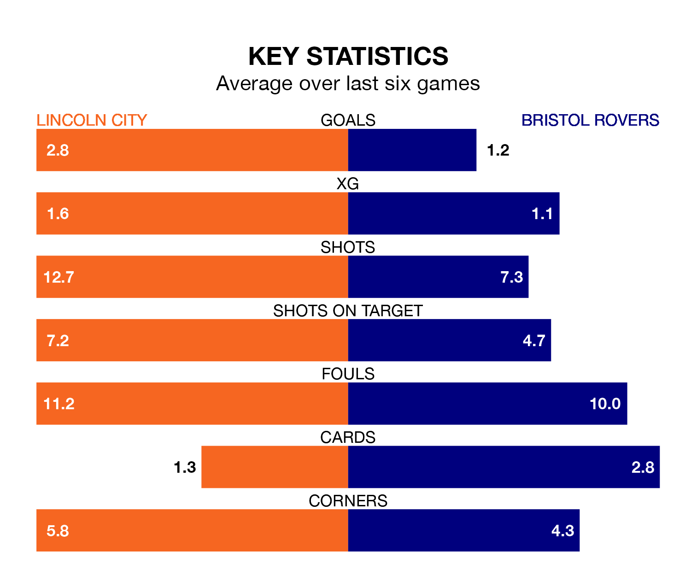

Lincoln City are on an excellent run ahead of hosting Bristol Rovers at the LNER Stadium on Saturday, with 16 points collected from their last six games.
The Imps have picked up five wins and one draw in their last six EFL League One games, and face a Gas side whose last six games have brought three wins and one draw.
With Lukas Jensen between the sticks, Lincoln can rely on one of the league's safest pair of hands. He has kept 16 clean sheets in his 38 appearances this season, and only one other 'keeper – Portsmouth's Will Norris – has been able to prevent the opposition scoring on more occasions in EFL League One.
In Rovers' net, Matthew Cox has three clean sheets in 27 games. He has conceded a goal every 71 minutes, 60% more often than the 114 minutes between goals for Jensen.
In the last 10 years, Lincoln and Rovers have played each other on eight occasions. Lincoln won three of them, Rovers four, and they drew once.
On average, the Imps scored 1.5 goals and the Gas 1.5 in those matches.
Their last meeting was on September 2, when they played out a 1-1 draw.
With 51 goals in 38 games so far this season, City are scoring at the league's average rate with 1.3 goals per game. And they are conceding fewer than average, letting in 33 goals at a rate of 0.9 per game.
The Gas are also average scorers, with 1.3 goals per game. They have conceded 1.4 goals per game.
The Imps are ninth in the table after 38 games, of which they have won 15 and drawn 13, earning 58 points.
The visitors are three places behind the home team in 12th, with 14 wins and eight draws putting them on 50 points.
Lincoln's last match was on Tuesday, a 6-0 win against Cambridge United, with Jack Moylan (two), Joseph Taylor (two), Dylan Duffy and Timothy Eyoma getting the goals for the Imps.
Rovers drew 0-0 with Fleetwood Town last time out, also on Tuesday.
Saturday's match will be refereed by Scott Simpson, who has taken charge of five EFL League One games so far this season, issuing two red cards and booking 19 players. He has not awarded any penalties.
The last Lincoln game Simpson refereed was a 1-0 away loss to Stevenage on November 18. He is yet to oversee a match featuring Rovers this season.
Updated: 15:10 (UTC), 15/03/24